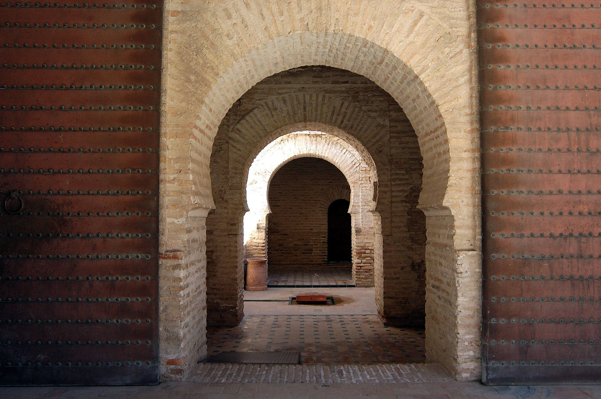
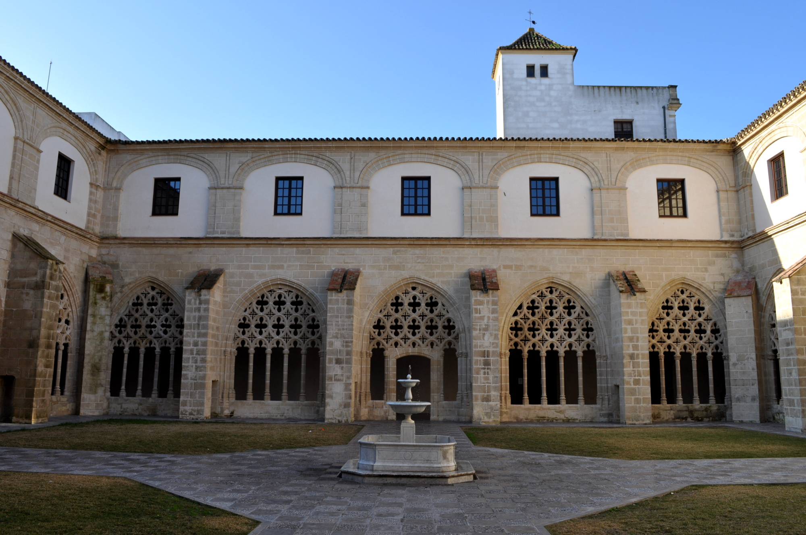

Puntos de interés
Jerez de la Frontera es una ciudad llena de encanto y tradición, donde cada rincón refleja su rica historia y cultura. Desde sus monumentos históricos y plazas llenas de vida, hasta sus bodegas y espacios naturales, Jerez ofrece lugares que sorprenden por su belleza y autenticidad, invitando a descubrir la esencia de Andalucía en cada paso.
CATEDRAL DE JEREZ
La Catedral de Jerez es un majestuoso edificio que combina estilos gótico, barroco y neoclásico. Su impresionante interior, con altares, capillas y una torre que domina la ciudad, refleja la riqueza artística y espiritual de Jerez, siendo un punto de referencia histórico y cultural.
ALCÁZAR DE JEREZ
El Alcázar de Jerez es una fortaleza de origen árabe que combina torres, murallas y jardines cuidadosamente diseñados. Pasear por sus patios y recorrer sus almenas permite viajar al pasado y descubrir la historia medieval de la ciudad, disfrutando de vistas únicas y rincones llenos de encanto.
CLAUSTROS DE SANTO DOMINGO
Los Claustros de Santo Domingo son un maravilloso conjunto gótico con arcos y jardines interiores que transmiten serenidad. Actualmente funciona como espacio cultural, donde se celebran exposiciones, conciertos y actividades artísticas.
